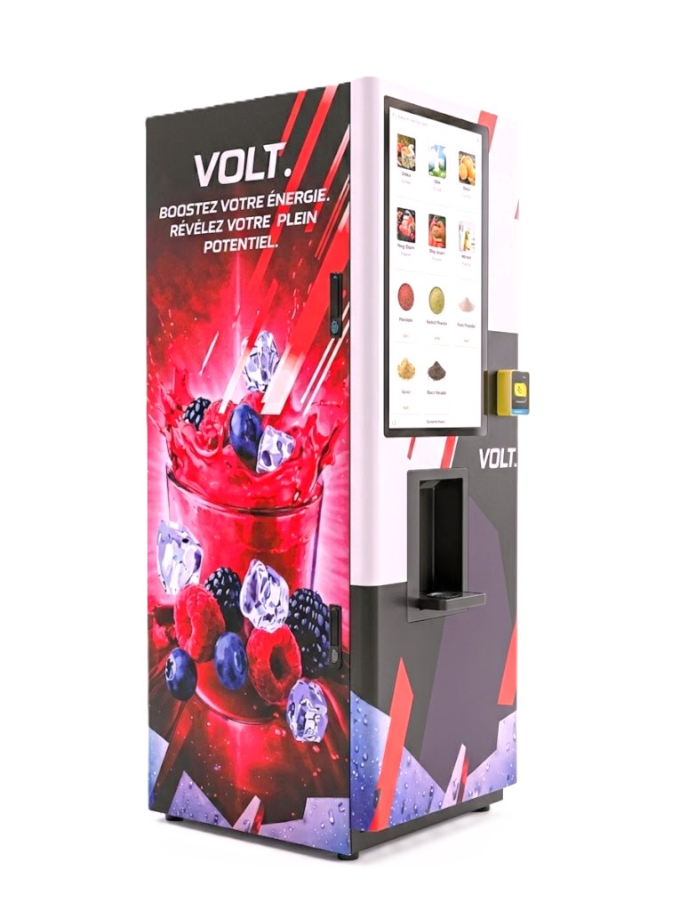

Disponible à Berne · Canton de Berne
Distributeur de boissons connecté pour votre salle de fitness à Berne
Équipez votre club de fitness bernois avec une station VOLT. — boissons vitaminées pour vos membres, revenu passif pour votre club, zéro gestion quotidienne.
0 CHF
Installation
9 sec
Par boisson
100%
Clé en main
Berne · Canton de Berne
POURQUOI LES FITNESS
BERNOIS CHOISISSENT VOLT.
Berne, capitale fédérale, abrite une population active et sportive — fonctionnaires fédéraux, familles, étudiants de l'Université de Berne. Les clubs de fitness bernois cherchent à fidéliser leurs membres avec des services à valeur ajoutée sans alourdir leur gestion opérationnelle. VOLT. répond exactement à ce besoin.
- Service disponible dans tout le canton de Berne
- Installation et maintenance assurées par VOLT. — sans démarche de votre côté
- Revenu mensuel récurrent sans investissement ni stock à gérer
- Boissons adaptées à tous les profils de membres bernois

Questions fréquentes — Berne
TOUT CE QU'IL FAUT SAVOIR
POUR BERNE
Nos autres villes
ÉQUIPEZ VOTRE FITNESS
BERNOIS
Installation gratuite, revenu récurrent, membres fidélisés. Devis personnalisé pour votre club de fitness à Berne ou dans le canton.
Demander une offre →